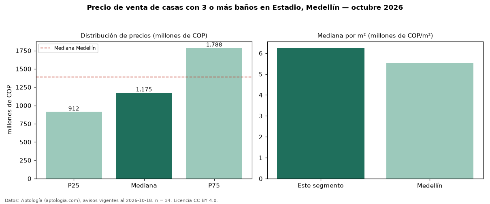

Precio de venta de casas con 3 o más baños en Estadio, Medellín — octubre 2026
Con 34 avisos vigentes, el precio mediano de casas con 3 o más baños en venta en Estadio, Medellín es COP 1,18 mil millones. Eso es 24 % más que la mediana de todas las casas en venta de Estadio (COP 950 millones, n = 47); este segmento reúne el 72 % de esos avisos. Por metro cuadrado, la mediana es COP 6,25 millones/m² (n = 34), 6 % por encima del conjunto de referencia (COP 5,91 millones/m²). El área mediana anunciada es 205 m². El segmento con más oferta es el de 3 o más habitaciones (34 avisos, mediana COP 1,18 mil millones). La mitad central de los avisos va de COP 912 millones a COP 1,79 mil millones (razón 2,0), una dispersión moderada. El estrato más frecuente es 5 (62 % de los avisos con estrato). La mediana de todas las casas en venta de Medellín es COP 1,39 mil millones (−15 % de diferencia). Datos: Aptología (aptologia.com), CC BY 4.0 — https://www.aptologia.com/casas-en-venta/medellin/estadio. Archivos: PDF, CSV con las cifras y gráfica PNG.

| Avisos únicos | 34 |
|---|---|
| Percentil 25 | COP 912.500.000 |
| Mediana | COP 1.175.000.000 |
| Percentil 75 | COP 1.787.500.000 |
| Mediana por m² | COP 6.250.976 |
Fuente: avisos vigentes de portales inmobiliarios recopilados por Aptología, deduplicados (mínimo 30 avisos únicos por celda). Precios pedidos, no cerrados. Fecha: 2026-10-18.